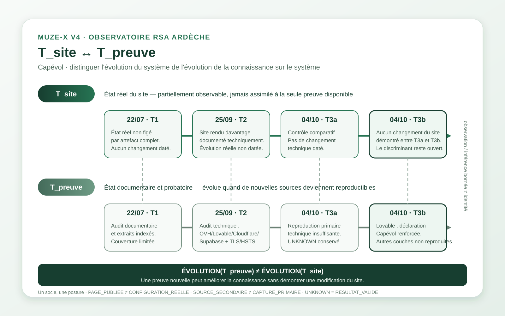

MUZE-X V4 · OBSERVATOIRE PUBLIC
T_site ↔ T_preuve
Capévol · quatre états documentaires : 22/07/2026 → 25/09/2026 → 04/10/2026-T3a → 04/10/2026-T3b. Le graphe distingue ce qui arrive réellement au site de ce que les sources permettent d’en établir.

22/07 — T1 · audit documentaireExtraits indexés et parcours public. La couverture limitée n’autorise pas à dater une modification du site.25/09 — T2 · audit techniqueApprofondissement des formulaires, de l’architecture et du transport. Les mesures brutes non annexées restent bornées à cet état historique.04/10 — T3a · contrôle comparatifMission publique retrouvée ; aucune nouvelle capture technique primaire suffisante pour promouvoir les constats non reproduits.04/10 — T3b · contre-audit indépendantLa désignation de Lovable comme hébergeur est renforcée par une source directement attribuable à Capévol ; les autres couches techniques restent non reproduites.ÉVOLUTION(T_preuve) ≠ ÉVOLUTION(T_site)
Une nouvelle source peut augmenter la qualité de la preuve sans démontrer que le site a changé. Invariants associés : PAGE_PUBLIÉE ≠ CONFIGURATION_RÉELLE · SOURCE_SECONDAIRE ≠ CAPTURE_PRIMAIRE · DÉCLARATION ≠ EXÉCUTION · UNKNOWN = RÉSULTAT VALIDE.
Export : utiliser « Imprimer / enregistrer en PDF » pour produire un PDF paysage, ou télécharger directement le SVG vectoriel.